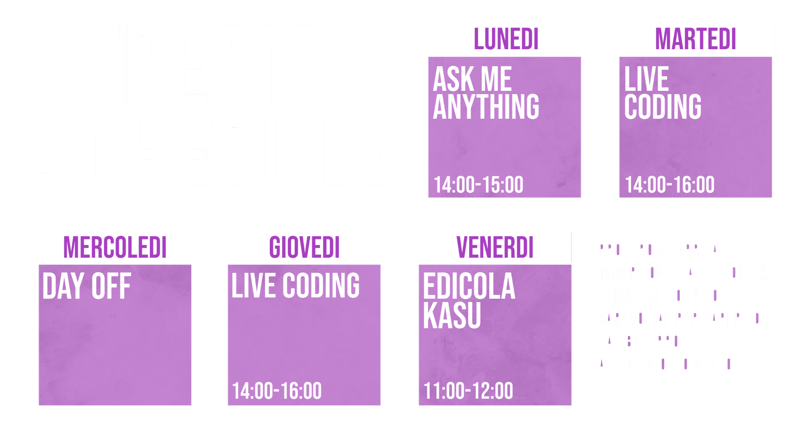
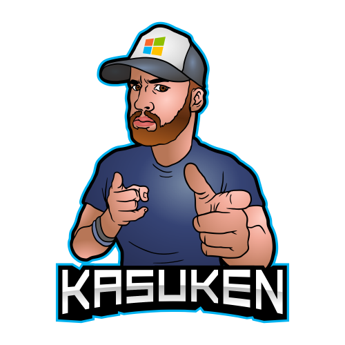

Ask Me Anything
In questa live potete chiedermi quello che volete su argomenti come: produttività, strumenti che uso ogni giorno, programmazione, sport, ecc...
Live Coding
Durante queste live scriveremo tanto codice insieme e spesso quello che scriveremo non funzionerà, ma grazie al vostro aiuto dalla chat, riusciremo a far andare tutto!
Edicola Kasu
Ogni venerdi leggeremo le news direttamente dal mio feed RSS e commentiamo insieme le news del momento: dalla programmazione all'ethical hacking, fino alle crypto valute.
